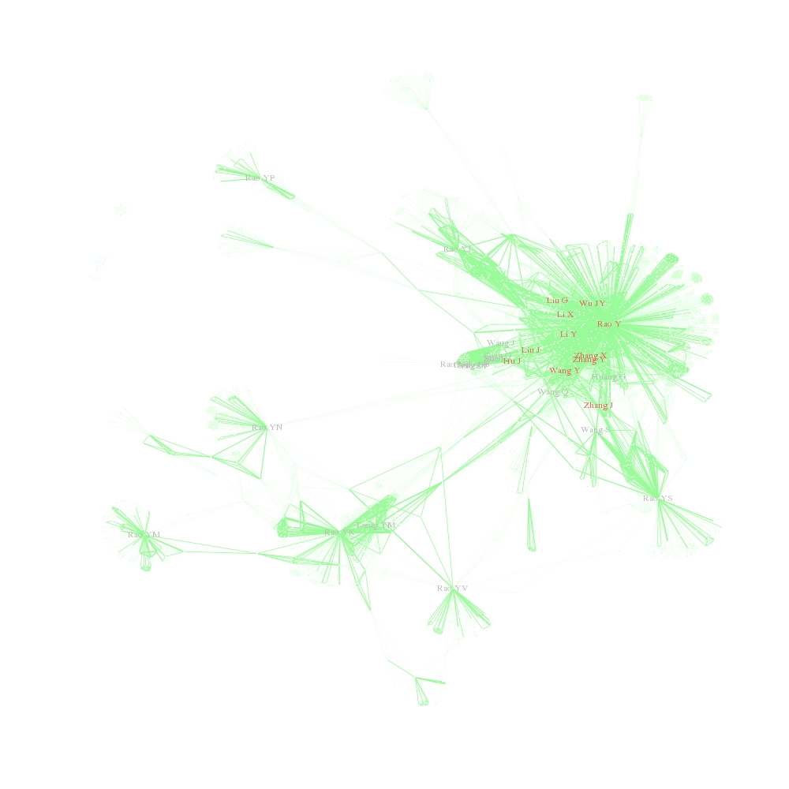

ScientistNetwork
author: "Kehao Wu"
date: "2015/2/28"
 At first, please forgive my poor English expression.
At first, please forgive my poor English expression.
An idea illustrating social network of scientists using R comes into my mind. My Blog
 In this picture, you could find some funny phenomenons. Such as, some guys whose name are very similar to Rao Y have appeared in this social network. I am not sure whether it results from bugs or it could reveal some facts.
- The co-author relationship maybe tell us something about their social network. Thus, I obtained the query result from pubmed with Entrez Programming Utilities. More details about Entrez Programming Utilities, please see
RCurl and XML package were available tools to handle E-utilities in R.
Function GraspData was construct to obtain data from pubmed. You can obtain query result for keyword 'Rao Y' Rao Yi is a Chinese neurobiologist like this:
keyPerson = "Rao Y"
relationSet = GraspData(keyPerson = keyPerson)
- After you obtain data, you could process these result using function Construct. We define link between two persons as their names appeared in a same paper. The paper with authors list without key person would be excluded from analysis. The cutoff option mean the links between certain two persons should appears much more times than cutoff times. In this example, all data would be included.
relationData = Construct(relationSet = relationSet,cutoff = 0)
- At last, we displayed their social relationship as a network graph using igraph package in R
g = Graph(data = RelationData,keyPerson = keyPerson)
- Welcome everyone come to contribute your codes to make it more perfect.